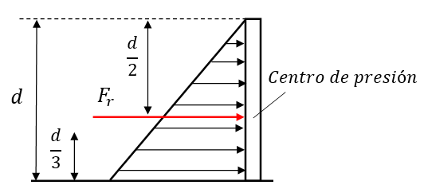
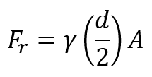
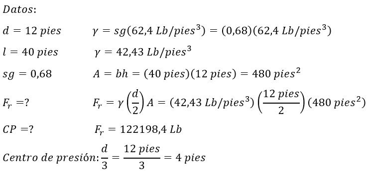

Los muros de contención son ejemplos típicos de paredes rectangulares expuestas a una presión que varía desde cero, en la superficie del fluido, hasta un máximo, en la parte inferior de la pared.
Centro de presión
La fuerza real se distribuye sobre la superficie de la pared, pero para fines de análisis, es conveniente determinar la fuerza resultante y el sitio donde anda.


γ: Peso específico [N/m3], [Lb/pies3]
d: Altura del fluido [m], [pies]
A: Área de la pared [m2], [pies2]
Fr: Fuerza resultante [N], [Lb]
Ejemplo:
En la figura anterior el fluido es gasolina (sg=0,68) y la profundidad son 12 pies. la pared tiene 40 pies de largo. Calcular la magnitud de la fuerza resultante sobre la pared y la localización de la presión.

Respuesta: la fuerza resultante vale 122198,4 Lb y el centro de presión se encuentra a 4 pies.